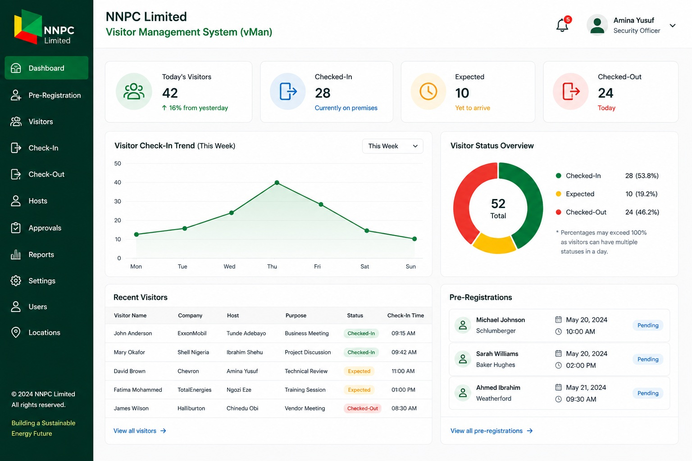
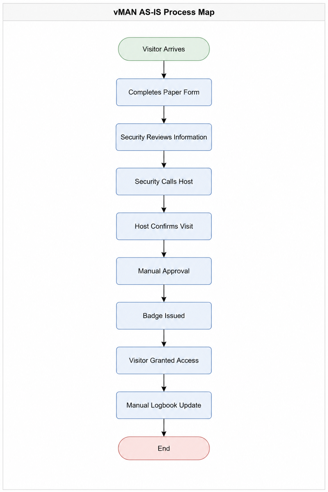
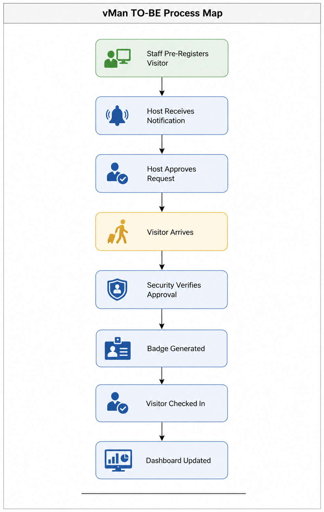

Enterprise Visitor Management System (vMan)
This project involved the analysis, design, and implementation of an Enterprise Visitor Management System (vMan) to replace a manual, paper-based visitor registration process. Through stakeholder engagement, requirements elicitation, process mapping, and Agile delivery practices, the solution automated visitor onboarding, approvals, tracking, and reporting, resulting in improved security controls, enhanced user experience, and increased operational efficiency.

Project Overview
- Project: Enterprise Visitor Management System (vMan)
- Role: Lead Business Analyst / Solution Analyst.
- Organization: NNPC Limited
- Methodology: Agile.
- Project Type: Business Process Automation & Digital Transformation
- Duration: 6 Months
- Objective: Automate visitor registration, approval, tracking, and reporting processes while improving security, efficiency, and user experience.
Business Problem:
The organization relied on a manual visitor management process involving paper forms, phone calls, and physical logbooks. This resulted in:
- Long visitor processing times
- Delays in host approvals
- Limited visibility of visitor movements
- Security and compliance risks
- Inaccurate visitor records
- Difficulty generating management reports
BA Activities Performed
- Problem Identification.
- Business Need Assessment.
- Stakeholder Interviews.
- Initial Scope Definition.
Current State Analysis
To understand the existing process, I conducted stakeholder interviews, reviewed operational procedures, and observed the visitor registration process.

Key Pain Points Identified
| Issue | Business Impact |
|---|---|
| Manual registration | Increased processing time. |
| Host confirmation by phone | Approval delays. |
| Paper-based records | Data inaccuracies. |
| No centralized reporting | Limited visibility. |
| Manual tracking | Security concerns. |
Analysis Techniques Used
- Process Mapping.
- Current State Assessment.
- Root Cause Analysis.
- Observation Sessions.
Stakeholders
A stakeholder analysis was conducted to understand interests, influence levels, and communication needs.
Stakeholder Matrix
| Stakeholder | Interest | Influence | Engagement Strategy |
|---|---|---|---|
| Security Team | High | High | Weekly workshops/Requirements sessions |
| Staff (Hosts) | High | Medium | Requirements sessions/Feedback |
| IT Team | High | High | Technical reviews |
| Management | High | High | Steering committee updates |
| Visitors | Medium | Low | User feedback sessions |
Stakeholder Communication Plan
| Communication | Audience | Frequency |
|---|---|---|
| Project Status Report | Management | Weekly |
| Sprint Review | Stakeholders | Bi-Weekly |
| Requirements Workshop | Users | As Required |
| UAT Sessions | End Users | During Testing |
| Training Sessions | Staff | Before Go-Live |
BA Activities Performed
- Stakeholder Analysis.
- Stakeholder Mapping.
- Communication Planning.
- Workshop Facilitation
Requirements Gathered
Requirements were gathered through workshops, interviews, process walkthroughs, and stakeholder reviews.
Business Requirements (BRD)
BR-001
The system shall enable employees to pre-register visitors in advance of their scheduled visit to facilitate a seamless check-in process and improve security screening.
BR-002
The system shall automatically notify designated hosts upon visitor arrival to reduce waiting times and improve visitor handling efficiency.
BR-003
The system shall generate and issue visitor badges upon approval to support secure identification and controlled access to company facilities.
BR-004
The system shall maintain a complete audit trail of visitor registrations, approvals, check-ins, check-outs, and access activities to support compliance, security monitoring, and audit requirements.
BR-005
The system shall provide management dashboards and reports to enable visibility into visitor activities, support decision-making, and monitor operational performance.
BR-006
The system shall record visitor check-in and check-out activities electronically to improve accuracy and eliminate reliance on manual logbooks.
BR-007
The system shall enforce visitor approval workflows to ensure that only authorized visitors are granted access to company premises.
BR-008
The system shall maintain a centralized repository of visitor information to improve record management, data accessibility, and reporting capabilities.
BR-009
The system shall provide real-time visibility of visitors currently on-site to enhance security oversight and emergency response preparedness.
BR-010
The system shall standardize visitor management processes across all company locations to improve governance, consistency, and operational efficiency.
Functional Requirements
|
Non Functional Requirements
|
BA Activities Performed
- Requirements Elicitation.
- BRD Development.
- Requirements Traceability.
- Requirements Validation
Analysis Conducted
After gathering requirements, I analyzed the current process and identified opportunities for improvement.
Gap Analysis
| Current State | Future State |
|---|---|
| Paper forms | Digital registration. |
| Phone approvals | Automated workflow |
| Manual records | Centralized database |
| No dashboards | Real-time reporting |
| Manual tracking | Automated visitor monitoring |
Root Cause Analysis
Problem
Visitor processing delays.
Causes Identified:
- Manual approvals
- Duplicate data entry
- Lack of automation
- Inefficient communication
User Stories
Epic: Visitor RegistrationUser Story 1
As a Staff Member, I want to pre-register visitors before their arrival, so that they can be processed quickly upon arrival.
User Story 2
As a Host, I want automatic notifications when my visitor arrives, so that I can receive them promptly.
User Story 3
As Security Personnel, I want visibility of visitor approvals, so that only authorized visitors gain access.
User Story 4
As a Security Manager, I want visitor reports and analytics, so that I can monitor trends and compliance.
BA Activities Performed
- Gap Analysis.
- User Story Development.
- Business Rules Analysis.
- Future State Design
Proposed Solution
A centralized Visitor Management System was proposed to automate visitor registration, approvals, notifications, tracking, and reporting.

Agile Delivery Approach
Product Backlog| Epic | Description |
|---|---|
| Visitor Registration | Visitor onboarding |
| Approval Workflow | Host approval process |
| Visitor Tracking | Check-in/check-out. |
| Reporting | Dashboards and analytics. |
| Administration | Security controls. |
Sprints
Sprint 1
Goal:
Visitor Registration Module
Deliverables:
- Registration Form.
- Visitor Database.
- Email Confirmation.
Sprint 2
Goal:
Approval Workflow
Deliverables:
- Host Approval Screen .
- Automated Notifications.
- Status Tracking.
Sprint 3
Goal:
Reporting & Analytics
Deliverables:
- Management Dashboard.
- Visitor Reports.
- Trend Analysis.
BA Activities Performed
- Product Backlog Refinement.
- Sprint Planning Support.
- User Story Prioritization.
- Acceptance Criteria Definition.
- Sprint Review Participation.
Business Benefits
The proposed solution delivered measurable business value.
| Benefit Area | Impact |
|---|---|
| Efficiency | Reduced visitor processing time |
| Security | Improved visitor tracking and compliance |
| User Experience | Faster visitor onboarding |
| Reporting | Real-time dashboards and insights |
| Productivity | Reduced manual administrative effort |
Strategic Benefits
- Improved operational efficiency
- Enhanced security governance
- Better decision-making through analytics
- Standardized visitor management process
Outcome
The Visitor Management System successfully transformed a manual process into a streamlined digital workflow.
Key Outcomes
- Automated end-to-end visitor registration and approval process
- Improved visitor visibility and tracking
- Enhanced security compliance and auditability
- Enabled management reporting and data-driven decision-making
- © Untitled
- Design: HTML5 UP